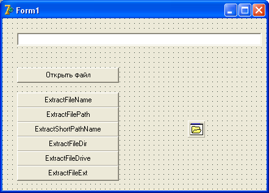

Тип Variant
Бывают случаи, когда на этапе программирования мы еще не можем четко определить тип данных определенной переменной.
В таком случае можно воспользоваться очень мощным типом Variant.
Этот тип вводился в Delphi для поддержки технологии OLE (Object Link and Embedding – внедрение и связь объектов).
Такая технология широко используется в Windows для обмена данными между приложениями различного типа.
С помощью OLE происходит вставка таблицы MS Excel в редактор текстов MS Word, или картинка из Paint легко вставляется в тот же редактор.
В этой технологии Variant используется на каждом шагу, однако ему можно найти применение и в других случаях.
Переменные типа Variant могут принимать значения любого типа!
Вы присваиваете такой переменной что угодно, а программа сама определяет ее тип на этапе выполнения.
Давайте рассмотрим пример:
var V : Variant; begin V := 5; //присвоили целое число V := 'Это текст'; //присвоили строку V := True; //логический тип V := 3.14; //вещественный тип end;
В этом примере во время выполнения программы тип переменной изменится 4 раза, и код выполнится корректно.
Когда программа встречает тип Variant, она автоматически выделяет под нее память.
Если значение не задано, переменной присваивается ноль.
Совет: старайтесь использовать тип Variant только там, где это действительно необходимо!
За удобство использования такой переменной тоже приходится платить.
Переменная такого типа занимает значительно больше памяти, чем переменная любого другого типа.
Процессору мы тоже задаем лишнюю работу, ведь сначала нужно определить тип данных в переменной, затем присвоить этот тип самой переменной, и т.п.
Кроме того, переменные типа Variant очень сложно отлаживать в больших программах.
Складывая, к примеру, строку и целое число, вы можете получить совсем не тот результат, который ожидали!
Рассмотрим пример:
var v1, v2, v3 : Variant; begin v1 := '1'; v2 := '5'; v3 := 10; v1 := v1 + v2 + v3; end;
Как вы считаете, какой результат окажется в конце концов в переменной v1?
На первый взгляд, результат очевиден: число 16.
Однако не спешите с выводами.
Когда операторы вычисления имеют равный приоритет, они выполняются слева – направо.
В данном примере вначале объединятся строки, в результате чего получится строка "15".
Затем эта строка преобразуется в целое число, и к нему будет прибавлено число 10.
Поэтому результат сложения – число 25.
Функции для работы с именем файла
Любая серьезная программа обязательно работает с каким-либо файлом, или даже с множеством файлов.
Программы для работы с базами данных напрямую связаны с таблицами и индексами, которые представляют собой файлы различных форматов, редакторы текста работают с текстовыми файлами, а графические редакторы – с графическими.
Все эти программы могут работать с настроечными файлами – файлами, в которых программа сохраняет пользовательские настройки, а при загрузке считывает их.
Там, где приходится работать с файлами, требуется уметь обрабатывать и имя файла: вычленять только имя или только адрес файла, диск, на котором файл находится, или расширение имени файла.
Ниже представлен список функций, которые позволяют решить все эти задачи.
Функция ExtractFileName()
Функция возвращает имя файла без имени диска и каталогов, извлекая его из полного имени файла FileName.
В качестве параметра указывается полный путь и имя файла.
Пример:
var S: string; begin ... S := ExtractFileName( 'C:\DIR1\myfile.txt'); // S = 'myfile.txt' ... end;
Функция ExtractFilePath()
Функция возвращает путь к файлу, извлекая его из полного имени файла.
Если имя файла не содержит ни имя каталогов, ни имя диска, то функция возвращает пустую строку.
Подобное же действие выполняет функция ExtractFileDir().
Отличие этих функций в том, что в конце возвращаемого адреса функции ExtractFilePath() есть знак "\", а функция ExtractFileDir() этот знак не устанавливает:
var S: string; begin ... S:= ExtractFilePath( 'C:\DIR1\DIR2\myfile.zzz'); //S ='C:\DIR1\DIR2\' S:= ExtractFileDir( 'C:\DIR1\DIR2\myfile.zzz'); //S ='C:\DIR1\DIR2' S:= ExtractFilePath( 'myfile.zzz'); //S ='' ... end;
Функция ExtractShortPathName()s
Функция конвертирует длинное имя файла в DOS-формат, так называемый, 8.3.
Этот формат подразумевает, что имя файла или папки может быть длиной максимум 8 символов, а затем, после точки, может присутствовать расширение имени файла из 3-х символов.
Если имя папки (файла) имеет больше символов, оно будет обрезано до 8 символов.
Если указанный файл или каталог не существует, то функция возвращает пустую строку.
Параметр может представлять собой полное имя файла.
Если указанный файл не существует, то функция возвращает пустую строку.
Пример:
var S: string; begin ... S:= ExtractShortPathName( 'C:\Program Files\Accessories\wordpad.exe'); //Результат: S= C:\PROGRA~1\ACCESS~1\WORDPAD.EXE ... end;
Процедура ProcessPath()
Процедура анализирует полное имя файла и возвращает отдельно имя диска, каталог и имя файла.
Если файл не существует, то возникает ошибка.
Когда полное имя файла содержит больше одного каталога, также возникает ошибка.
var
Dir, S: string; //для имени папки и имени файла
Drive: Char; //для имени диска (буквы A-Z)
begin
...
ProcessPath('C:\DIR1\work.txt', Drive, Dir, S); // Drive= 'C'; Dir= '\DIR1'; S= 'work.txt'
...
end;
Функция ExtractFileDrive()
Функция возвращает имя диска, извлеченное из полного имени файла.
Если указанное имя файла не содержит имя диска, то функция возвращает пустую строку.
Для имени в UNC формате (сетевое имя) возвращается строка в формате '\\<имя сервера>\<имя ресурса>'.
var S: string; begin ... S:= ExtractFileDrive( 'C:\DIR1\myfile.zzz'); //S= 'C:' ... end;
Функция ExtractFileExt()
Функция возвращает расширение файла, имя которого указано в параметре.
Результирующая строка включает в себя символ точки и символы расширения файла.
Если указанное имя файла не имеет расширения, то функция возвращает пустую строку.
Пример:
var S1, S2 : string; begin ... S1:= ExtractFileExt( 'www.atrussk.ru/delphi/index.htm'); //S1='.htm' S2:= ExtractFileExt( 'c:\dir1\myfile.txt'); //S2 ='.txt' ... end;
Пишем программу
Чтобы усвоить, как работают эти функции, создадим новое приложение.
Форму сразу переименуйте в fMain, а проект сохраните под названием fname в отдельной папке.
На форму установите Edit, здесь будет отображаться полное имя файла.
Сразу под ней установите Label, тут будет отображаться результат работы функций.
Очистите текст и у Edit и у Label.
Ниже бросьте на форму кнопку, и напишите на ней "Открыть файл".
Рядом с ней бросьте OpenDialog, он нам понадобится для открытия нужного файла.
Еще ниже сгруппируйте 6 кнопок, на которых напишите:
ExtractFileName ExtractFilePath ExtractShortPathName ExtractFileDir ExtractFileDrive ExtractFileExt
Создайте обработчик для кнопки "Открыть файл".
Здесь мы напишем такой текст:
if OpenDialog1.Execute then begin
Edit1.Text := OpenDialog1.FileName; //записываем адрес и имя открытого файла
Label1.Caption := Edit1.Text; //копируем тоже самое в Label
end; //if
Далее поочередно пишем обработчики для оставшихся кнопок.
Нажмите первую, и напишите:
Label1.Caption := ExtractFileName(Edit1.Text); //извлекаем имя файла
Для второй кнопки:
Label1.Caption := ExtractFilePath (Edit1.Text);
Остальные кнопки обрабатываются также – просто подставьте указанную на кнопке функцию, остальной код остается без изменений.
Сохраните и скомпилируйте пример, посмотрите как он работает.